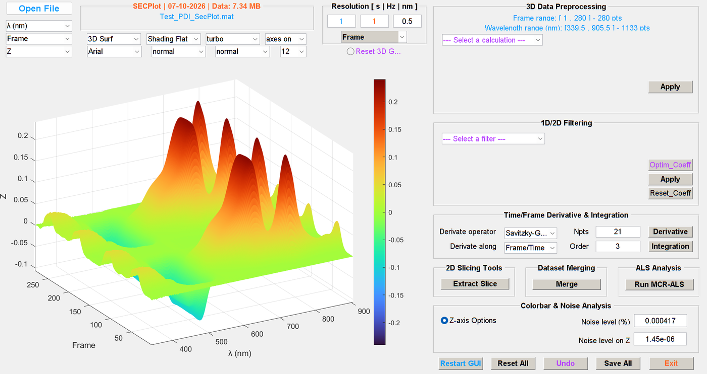
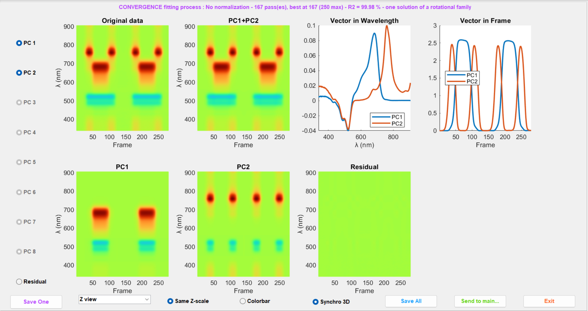

SECPlot
Traitement et visualisation de données spectroélectrochimiques
Logiciel académique gratuit, pour Windows et Linux. Aucune licence MATLAB n’est nécessaire.

D = C ST + E
SECPlot charge un jeu de données à trois dimensions — une intensité mesurée pour chaque longueur d’onde et chaque trame —, l’affiche en surface ou en carte, et le décompose en spectres et en profils temporels des espèces qui le composent.
Voir l’expérience entière
Une manipulation de spectroélectrochimie, ce sont des milliers de spectres. SECPlot les montre d’un coup, en surface 3D ou en carte 2D, l’axe des trames passant en temps d’un clic : la bascule est purement visuelle, les données ne sont jamais modifiées.
Traitements
- opérations algébriques et corrections de ligne de base sur tout le jeu de données
- filtres 1D et 2D (Savitzky-Golay, gaussien, moyenne, médian), avec mesure du niveau de bruit
- dérivée et intégrale selon le temps ou les trames
- coupes à longueur d’onde fixe (cinétiques) ou à trame fixe (spectres), avec détection de pics
- fusion de deux acquisitions en un seul jeu, et reconstruction des mesures en faisceau haché
- résultats écrits en fichiers texte et dans Excel

Résolution multivariée de courbes (MCR-ALS)
Le jeu de données s’écrit comme un produit : les profils de concentration C de quelques composantes par leurs spectres S, plus un résidu. SECPlot propose le nombre de composantes à partir des valeurs singulières et dit sur quoi il s’appuie ; le choix vous reste.
- profils de départ choisis automatiquement (variables les plus pures), pointés à la main ou mesurés à partir de fenêtres de présence
- contraintes sur l’un ou l’autre facteur : non-négativité, unimodalité, fenêtres de présence, trames de blanc tenues à zéro
- traitement selon les trames ou selon les longueurs d’onde, les profils étant reprojetés quand on change d’axe
- l’issue nommée : convergence, divergence, ou solution qui ne fait que reproduire la décomposition en valeurs singulières

Contrôlé
Chaque version est comparée à plus de 900 cas enregistrés, qui couvrent les lecteurs de fichiers, les filtres, les opérations matricielles et la résolution. Un changement qui déplace un résultat est soit une correction, dite comme telle, soit un défaut.
Pour commencer
Un mode d’emploi en français et en anglais explique chaque bouton et chaque champ, et l’ordre de travail dans la fenêtre de résolution. Aucune connaissance en informatique n’est requise. L’interface est en anglais.
Obtenir SECPlot
SECPlot est gratuit pour tous, étudiants comme chercheurs. Il est distribué en exécutables Windows et Linux 64 bits qui ne demandent que le MATLAB Runtime, gratuit : aucune licence MATLAB n’est nécessaire. Sa licence d’utilisation, gratuite, permet de l’installer sur autant de postes qu’on le souhaite et de le transmettre tel quel ; il ne peut pas être modifié. La version de démonstration ne demande aucune formalité : tout se fait et s’affiche, rien ne s’enregistre. La version complète est accordée, gratuitement elle aussi, aux utilisateurs inscrits avec une adresse académique.
SECPlot est fourni SANS AUCUNE GARANTIE.
Pour obtenir SECPlot, écrivez aux développeurs à echem-tools@univ-angers.fr.
Signaler un problème : Help ▸ Report a problem... dans SECPlot prépare un message aux auteurs — version, système, dernier message d’erreur — que vous relisez, complétez et envoyez vous-même ; le logiciel n’envoie rien de lui-même.
Citer SECPlot
Si SECPlot contribue à une publication, à une thèse ou à un projet financé (ANR, ERC, programme européen…), les auteurs vous seraient reconnaissants de le mentionner, par exemple dans les remerciements :
Les traitements ont été réalisés avec SECPlot (O. Alévêque et E. Levillain, MOLTECH Anjou, UMR 6200 CNRS, Université d’Angers), logiciel gratuit disponible sur demande à echem-tools@univ-angers.fr.
Ce que les logiciels envoient, et ce qu’ils n’envoient jamais : Données, sur la page d’accueil.